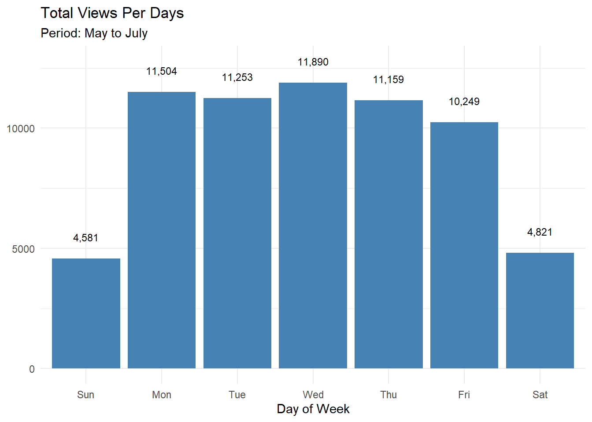
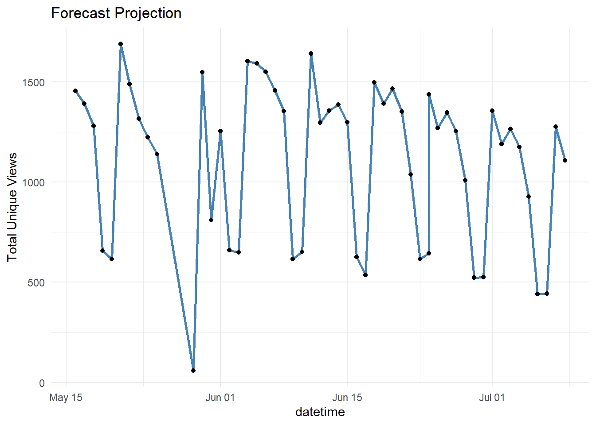
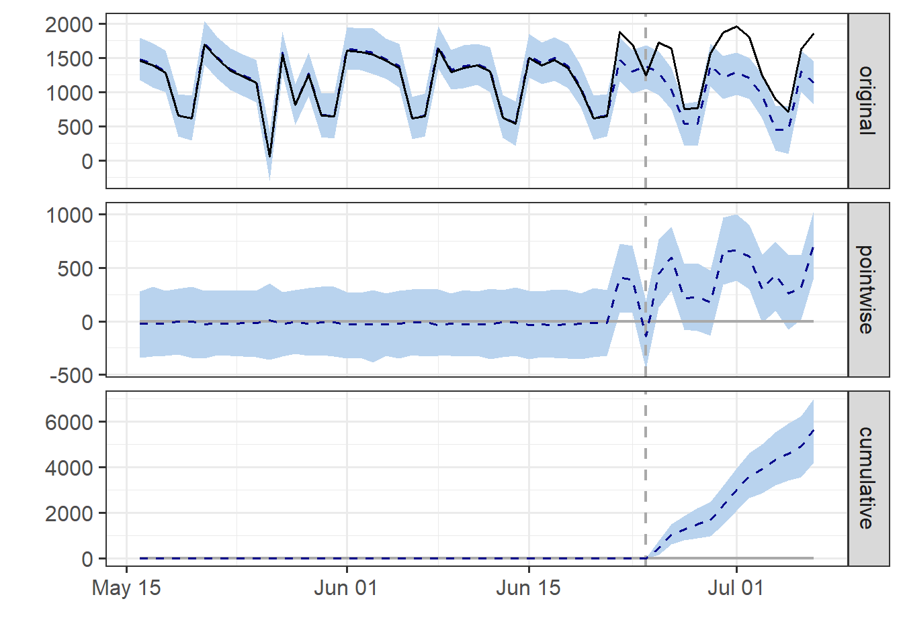

Chapter 8 Media
8.1 Causal Impact on Leads generation
8.1.1 Background
Dalam proses bisnis, tim marketing mempunyai peran untuk meningkatkan brand awereness sebuah produk yang dijual. Ketika upaya menarik perhatian pelanggan untuk mencari tahu produk atau layanan yang disediakan sukses akan menghasilkan sebuah leads. Simpelnya, leads adalah orang-orang yang tertarik pada produk atau layanan bisnis. Di era digital, leads dapat diartikan sebagai orang yang mengunjungi website secara langsung maupun melalui iklan, orang yang melakukan like, share terhadap konten atau kampanye yang sedang dilakukan. Selanjutnya, prospek ketertarikan ini nantinya akan disimpan untuk kemudian diarahkan kepada tim sales. Banyak sekali upaya yang dapat dilakukan untuk menghasilkan sebuah leads. Mulai dari membuat konten kreatif, iklan, menulis artikel, membagikan ebook, kode prome dan lain sebagainya.
Perlu dilakukan analisa seberapa efektif kampanye yang dilakukan untuk menghasilkan peningkatan leads. Causal Impact adalah sebuah analisis yang dapat digunakan untuk mencari kesimpulan secara statistik apakah ada perbedaan yang signifikan untuk lead generation dari periode sebelum kampanye dilakukan. Kesimpulan yang dapat diperoleh, apakah leads tersebut adalah hasil dari kampanye yang dilakukan, atau berasal dari faktor lain yang tidak teramati.
8.1.2 Modelling Analysis
library(tidyverse)
library(CausalImpact)
library(readxl)
library(forecast)
library(TSstudio)Data berasal dari hasil googleanalytics sebuah website. Untuk pemodelan post-period, akan digunakan 37 hari sebelumnya sebagai data training. Pertanyaan bisnisnya yaitu pada hari ke-38 dan seterusnya, setelah kampanye dilakukan, apakah memperoleh peningkatan leads yang signifikan?
data <- read_csv("assets/09-media/analytics.csv")glimpse(data)#> Rows: 54
#> Columns: 9
#> $ page [3m[38;5;246m<chr>[39m[23m "9fb22be32c347a5acd1d3724b0dae726", "9fb22be32c347a5~
#> $ datetime [3m[38;5;246m<dbl>[39m[23m 20180516, 20180517, 20180518, 20180519, 20180520, 20~
#> $ page_display [3m[38;5;246m<dbl>[39m[23m 0, 0, 0, 0, 0, 0, 0, 0, 0, 0, 0, 0, 0, 0, 0, 0, 0, 0~
#> $ unique_views [3m[38;5;246m<dbl>[39m[23m 1456, 1392, 1281, 658, 616, 1691, 1488, 1316, 1224, ~
#> $ average_page_time [3m[38;5;246m<dbl>[39m[23m 0, 0, 0, 0, 0, 0, 0, 0, 0, 0, 0, 0, 0, 0, 0, 0, 0, 0~
#> $ tickets [3m[38;5;246m<dbl>[39m[23m 0, 0, 0, 0, 0, 0, 0, 0, 0, 0, 0, 0, 0, 0, 0, 0, 0, 0~
#> $ bounce_rate [3m[38;5;246m<dbl>[39m[23m 0, 0, 0, 0, 0, 0, 0, 0, 0, 0, 0, 0, 0, 0, 0, 0, 0, 0~
#> $ exit_percentage [3m[38;5;246m<dbl>[39m[23m 0, 0, 0, 0, 0, 0, 0, 0, 0, 0, 0, 0, 0, 0, 0, 0, 0, 0~
#> $ page_value [3m[38;5;246m<dbl>[39m[23m 0, 0, 0, 0, 0, 0, 0, 0, 0, 0, 0, 0, 0, 0, 0, 0, 0, 0~Kita pilih beberapa kolom yang menjadi fokus analisis ini, yaitu datetime (harian) dan unique views yang berisi informasi berapa banyak orang yang mengunjungi halaman website tersebut.
actual <- data %>%
mutate(
datetime = lubridate::as_datetime(as.character(datetime))
) %>%
dplyr::select(datetime, unique_views) %>%
na.omit()
head(actual)#> [38;5;246m# A tibble: 6 x 2[39m
#> datetime unique_views
#> [3m[38;5;246m<dttm>[39m[23m [3m[38;5;246m<dbl>[39m[23m
#> [38;5;250m1[39m 2018-05-16 [38;5;246m00:00:00[39m [4m1[24m456
#> [38;5;250m2[39m 2018-05-17 [38;5;246m00:00:00[39m [4m1[24m392
#> [38;5;250m3[39m 2018-05-18 [38;5;246m00:00:00[39m [4m1[24m281
#> [38;5;250m4[39m 2018-05-19 [38;5;246m00:00:00[39m 658
#> [38;5;250m5[39m 2018-05-20 [38;5;246m00:00:00[39m 616
#> [38;5;250m6[39m 2018-05-21 [38;5;246m00:00:00[39m [4m1[24m691Leads generation yang dihasilkan paling tinggi ketika hari Rabu. Informasi tersebut dapat dijadikan pertimbangan penentuan hari untuk memulai kampanye.
actual %>%
mutate(
wdays = lubridate::wday(datetime, label = TRUE)
) %>%
group_by(wdays) %>%
summarise(total_views = sum(unique_views)) %>%
ungroup() %>%
mutate(
label = scales::comma(total_views)
) %>%
ggplot(
mapping = aes(x = wdays, y = total_views)
) +
geom_col(fill = "steelblue") +
labs(
title = "Total Views Per Days",
subtitle = "Period: May to July",
y = NULL,
x = "Day of Week"
) +
theme_minimal() +
geom_text(
aes(label = label, y = total_views + max(total_views) * 0.075) , size = 3
)
Seperti yang dijelaskan sebelumnya, akan di-subset 37 hari sebelum kampanye diberikan dan disimpan ke objek pre_campaign. Dari sinilah, kita dapat melihat pergerakan leads dan memperikirakan peningkatan yang dihasilkan sejak kampanye dilakukan.
pre_campaign <- actual %>%
slice(1:37)Selanjutnya, membuat objek time series dan melakukan pemodelan untuk menjadikan banchmark dari leads yang dapat kita peroleh jika tidak menggunakan kampanye. Kita akan gunakan Holtwinter sebagai metode untuk melakuan peramalan (forecast) 16 hari kedepan.
ts_campaign <- ts(pre_campaign$unique_views, frequency = 7)
fit_hw <- HoltWinters(ts_campaign)
forecast <- forecast(fit_hw, 16)Kita gabungkan data periode sebelum dilakukan kampanye dan hasil ramalannya yang disimpan ke objek append_data.
forecast_data <- data.frame(
datetime = lubridate::as_datetime(seq.Date(from = as.Date("2018-06-24"), by = "day", length.out = 16)),
unique_views = forecast$mean
)
append_data <- pre_campaign %>%
bind_rows(forecast_data)ggplot(data = append_data, mapping = aes(x = datetime, y = unique_views)) +
geom_line(color = "steelblue", size = 1) +
geom_point() +
labs(
title = "Forecast Projection",
y = "Total Unique Views"
) +
theme_minimal()
Dan kita juga mempunyai data aktual untuk periode tersebut. Kita perhatikan terjadi peningkatan total pengunjung website.
actual %>%
ggplot(mapping = aes(x = datetime, y = unique_views)) +
geom_line(color = "steelblue", size = 1) +
geom_point() +
labs(
title = "Data aktual jumlah pengunjung website",
subtitle = "Periode 16 Mei hingga 17 Juli",
y = NULL
) +
theme_minimal()
Untuk memperkirakan efek kausal, kita mulai dengan menentukan periode mana dalam data yang harus digunakan untuk melatih model (periode pra-intervensi) dan periode mana untuk menghitung prediksi kontrafaktual (periode pasca intervensi).
pre <- c(1,37)
post <- c(38, 53)Sintaks diatas berarti, poin observasi ke-1 sampai dengan 37 akan digunakan untuk training, dan poin observasi ke 38 hingga 53 untuk menghitung prediksi, atau kita juga bisa mendefinisikannya ke format interval tanggal (date). Kemudian ubah datanya menjadi format matriks sebagai syarat analisis dengan packages CausalImpact.
pre <- as.Date(c("2018-05-16", "2018-06-24"))
post <- as.Date(c("2018-06-25", "2018-07-10"))time.points <- seq.Date(as.Date("2018-05-16"), by = "days", length.out = 53)
data_ci <- zoo(
cbind(actual$unique_views, append_data$unique_views),
time.points
)Sekarang kita sudah memiliki data yang siap untuk memverifikasi efek kausal dari kampanye.
impact <- CausalImpact(data = data_ci, pre.period = pre, post.period = post)
plot(impact)
Secara default, plot berisi dari tiga panel. Panel pertama original menunjukkan data dan prediksi kontrafaktual untuk periode pasca kampanye. Panel kedua pointwise menunjukkan perbedaan antara data aktual yang diamati (leads) dan prediksi. Panel ketiga cumulative menggambarkan efek kumulatif dari intervensi (kampanye) yang dilakukan.
Hasil ini memiliki asumsi bahwa hubungan antara leads generation dan deret waktu pengamatan, sebagaimana ditetapkan selama pre-period, tetap stabil sepanjang post-period.
Kita dapat lihat informasi statistiknya dengan mengunnakan perintah summary(impact).
summary(impact)#> Posterior inference {CausalImpact}
#>
#> Average Cumulative
#> Actual 1417 18424
#> Prediction (s.d.) 984 (54) 12786 (697)
#> 95% CI [880, 1095] [11437, 14232]
#>
#> Absolute effect (s.d.) 434 (54) 5638 (697)
#> 95% CI [322, 537] [4192, 6987]
#>
#> Relative effect (s.d.) 44% (5.5%) 44% (5.5%)
#> 95% CI [33%, 55%] [33%, 55%]
#>
#> Posterior tail-area probability p: 0.00103
#> Posterior prob. of a causal effect: 99.89669%
#>
#> For more details, type: summary(impact, "report")Kita dapat memperoleh informasi dari actual dan predicted effect (average) serta efek absolut dan relatifnya. Output informasi statistik di atas mengatakan, leads generation setelah dilakukan kampanye mengalami peningkatan sebesar 44%, dari perkiraan rata-rata pengunjung websitenya sebanyak 984 orang menjadi 1417 kenyataannya.
Untuk panduan interpretasi yang benar dari hasil tabel ringkasan, packages CausalImpact menyediakan teks interpretasinya, yang dapat kita print menggunakan perintah:
interpretasi <- summary(impact, "report")
print(interpretasi)Hasilnya interpretasi teksnya akan seperti berikut:
Analysis report {CausalImpact}
During the post-intervention period, the response variable had an average value of approx. 1.42K. By contrast, in the absence of an intervention, we would have expected an average response of 0.98K. The 95% interval of this counterfactual prediction is [0.87K, 1.09K]. Subtracting this prediction from the observed response yields an estimate of the causal effect the intervention had on the response variable. This effect is 0.43K with a 95% interval of [0.33K, 0.54K]. For a discussion of the significance of this effect, see below.
Summing up the individual data points during the post-intervention period (which can only sometimes be meaningfully interpreted), the response variable had an overall value of 18.42K. By contrast, had the intervention not taken place, we would have expected a sum of 12.79K. The 95% interval of this prediction is [11.35K, 14.19K].
The above results are given in terms of absolute numbers. In relative terms, the response variable showed an increase of +44%. The 95% interval of this percentage is [+33%, +55%].
This means that the positive effect observed during the intervention period is statistically significant and unlikely to be due to random fluctuations. It should be noted, however, that the question of whether this increase also bears substantive significance can only be answered by comparing the absolute effect (0.43K) to the original goal of the underlying intervention.
The probability of obtaining this effect by chance is very small (Bayesian one-sided tail-area probability p = 0.001). This means the causal effect can be considered statistically significant.